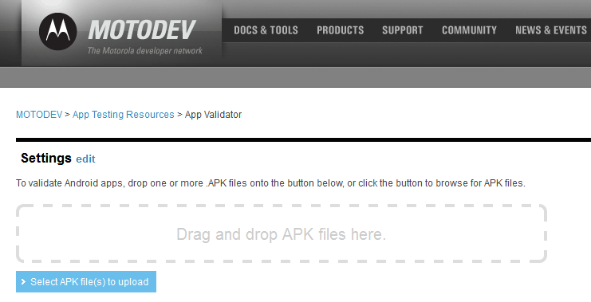
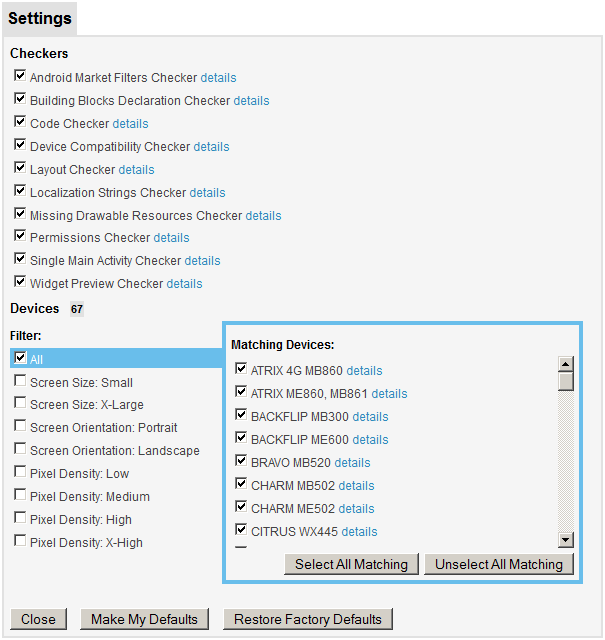
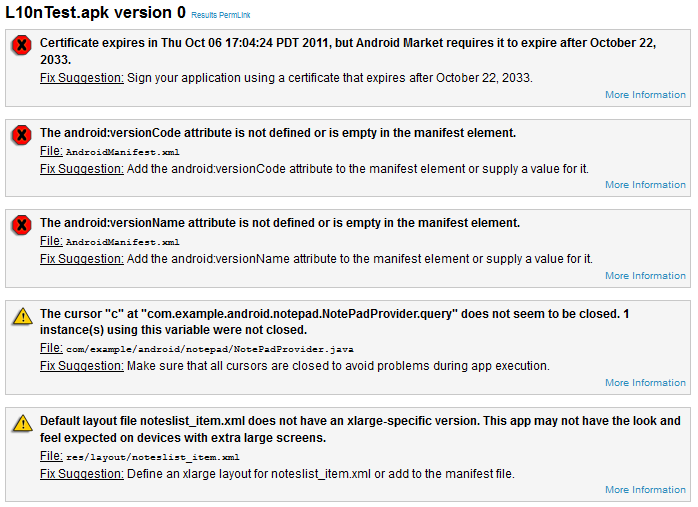

NOTE: This blog post was originally hosted on Motorola's MOTODEV web site. That site was decommissioned in 2012. I've made every attempt to preserve blog posts and accompanying forum posts with their original content. Many web links are no longer valid, so they have been removed and replaced with emphasized text.
by Eric Cloninger (EricC)
Hello Everyone,
I hope you've had a chance to download and try out MOTODEV Studio 3.0. We've made many improvements to the tools in this release, including the App Validator tool that is integrated into the IDE. Today, I'm pleased to announce that we've made those changes available to the online version of the App Validator as well.
If you aren't aware of this feature of the MOTODEV web site, you should be. The MOTODEV App Validator is a static analysis tool that inspects your Android applications (.apk files) and reports on many different potential problems. Even if you don't use MOTODEV Studio, you should be taking advantage of this tool.
Here are just a few of the conditions the App Validator can detect:
A full list can be found in this online document .
Start by browsing to http://developer.motorola.com/testing/app-validato

The new online version now gives you the ability to configure settings in a way that is similar to the version in MOTODEV Studio. Many of the command line switches that make the stand-alone tool so powerful are now available in the online tool. By clicking "edit" (next to "Settings"), you are presented with the following screen that allows you to configure the settings that best suit your needs.

From this screen, you can choose which checkers you wish to run. For example, if you don't want to see messages about missing strings, you can clear the checkbox for "Localization Strings Checker". If you only want to test the permissions for your app, clear all but the "Permissions Checker".
In a similar manner, you can choose which devices your app is compared against. For these tests, the validator isn't executed on the devices, but rather the values found in the manifest and layouts are compared against values for specific Motorola devices or classes of devices, such as those with Extra Large Screen Sizes.
When you're ready to perform the test, you can click "Close" to save the settings for the current session. If you choose "Make My Defaults", the choices are saved as a cookie on your computer. The "Restore Factory Defaults" button returns every checkbox to their default state.
When you are ready to test, just drag and drop your .apk files onto the web form. After a few seconds, you will see the results appear, similar to those shown below.

The results show up, as before, in a list at the bottom of the page. We limit the size of the output to 10,000 results to keep bandwidth down. If you want to clear the results of the process and test new apps, the "Clear Results" button will delete all the errors and allow you to continue testing files without reloading the page.
We've tried to make the online App Validator as useful as possible for developers while making it easy to understand and use. We hope you find this a benefit of your MOTODEV membership and use the results you find to make positive changes to your own offerings.
We have more changes in the works for both the stand-alone and online App Validator. If you are attending the O'Reilly Android Open conference in October, stop by Ballroom B on Tuesday at 2:00pm for more insight into this powerful tool.
Thank you for being a MOTODEV member!
Eric